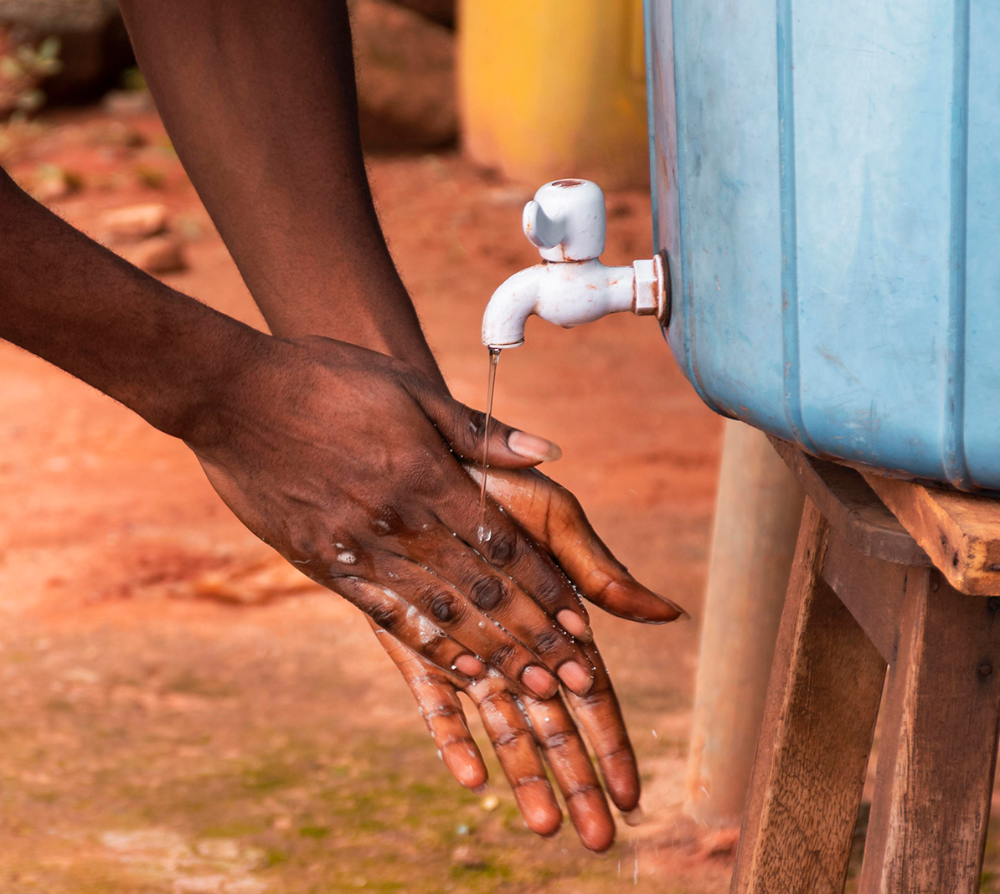
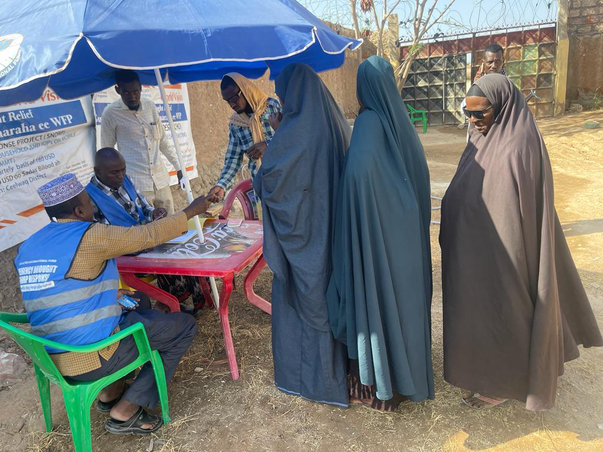
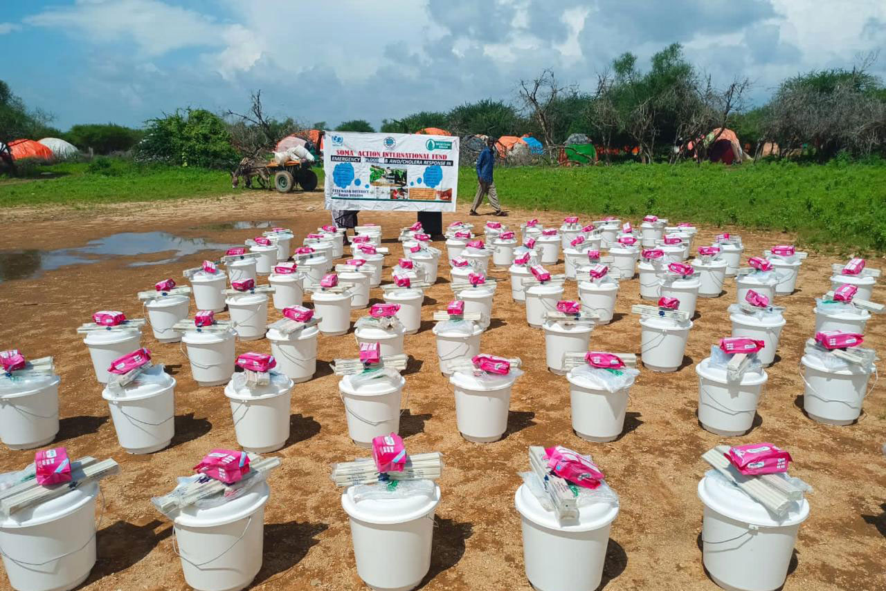

We work to save the lives of people in Somalia. To defend their rights. To keep them safe from harm. To give them a childhood in which they’re protected, healthy and educated. To give them a fair chance to fulfil their potential — so that someday, they can help build a better world. And we never give up.
Safe drinking-water, sanitation and hygiene are crucial to human health and well-being. Safe WASH is not only a prerequisite to health, but contributes to livelihoods, school attendance and dignity and helps to create resilient communities living in healthy environments.
Read More A humanitarian crisis (or sometimes humanitarian disaster) is defined as a singular event or a series of events that are threatening in terms of health, safety or well-being of a community or large group of people. It may be an internal or external conflict and usually occurs throughout a large land area. Local, national and international responses are necessary in such events.
Read More Through FFA, food insecure households receive cash or food-based transfers to address their immediate food needs, freeing up their time to build or rehabilitate assets, such as constructing a road or rehabilitating degraded land, that will have long-term impacts, creating healthier natural environments, reducing risks and the impact of shocks, increasing food productivity, and strengthening resilience to natural disasters.
Read More Drought is a prolonged dry period in the natural climate cycle that can occur anywhere in the world. It is a slow-onset disaster characterized by the lack of precipitation, resulting in a water shortage. Drought can have a serious impact on health, agriculture, economies, energy and the environment.
Read MoreSending money to people is empowering. When a disaster strikes, or conflict flares, money is often the first thing people need to buy food or pay for transport and temporary accommodation to get out of harm’s way. Not everyone needs the same thing at the same time. SAIF sends people money to give them the flexibility to choose what they need, when they need it. People spend most of the money SAIF sends them on food, but they also can use it to pay medical bills, rent or school fees. Sending people money means that they don’t need to make impossible trade-offs, like deciding to eat less so that they can keep all their children in school.
Read MoreTo resolve the siltation problem and boost food security, the county and national governments have embarked on an extensive project to desilt canals. The county department of agriculture said the project has enabled farmers to increase their farm acreage, thereby increasing food production in the area.
Read MoreThe overall objectives of this programme are to “promote tolerance and peaceful co-existence among all communities” and to “establish and operationalize a policy and institutional framework for SAIF and Early Warning Mechanisms on social conflict”.
Read MoreSOMA-ACTION has over twenty years (20) of experience in designing and implementing community-based relief, rehabilitation, and development and peace projects.
Need Help?
info@somaction.org
+254722447953, +252616951118
Soma-Action International Fund (SAIF)